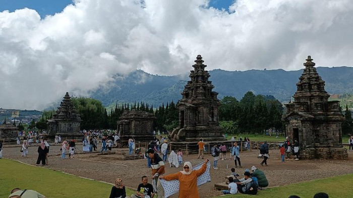

Referensi Foto

Referensi 1

Referensi 2

Candi Arjuna, terletak di kawasan Dataran Tinggi Dieng, Jawa Tengah, adalah kompleks candi Hindu yang
merupakan salah satu situs bersejarah tertua di Indonesia. Dibangun pada abad ke-7 hingga ke-8 Masehi,
kompleks ini terdiri dari lima candi utama yang diberi nama sesuai tokoh-tokoh dari wiracarita Mahabharata:
Candi Arjuna, Candi Semar, Candi Srikandi, Candi Puntadewa, dan Candi Sembadra.
Candi Arjuna merupakan candi utama dan paling terkenal di antara kelima candi tersebut. Arsitekturnya yang
khas dengan ukiran-ukiran yang indah mencerminkan gaya arsitektur klasik Jawa Kuno. Lokasinya yang berada di
ketinggian sekitar 2.000 meter di atas permukaan laut membuat tempat ini memiliki udara yang sejuk dan
pemandangan alam yang memukau.
Setiap tahun, Candi Arjuna menjadi lokasi utama pelaksanaan Dieng Culture Festival, yang menampilkan
berbagai kegiatan budaya, termasuk upacara pemotongan rambut anak gimbal.
Candi Arjuna berlokasi di Karangsari, Dieng Kulon, Kec. Batur, Kab. Banjarnegara, Jawa Tengah
Lokasiwedang ronde adalah salah satu minuman khas Jawa Tengah.
Minuman ini mengandung ramuan agak pedas(seperti jahe)
dengan penganan bulat-bulat kecil di dalamnya.
Purwaceng adalah herbal yang menjadi salah satu
oleh-oleh khas dari kawasan objek wisata Dataran Tinggi Dieng
Semur Kentang Dieng terbuat dari kentang Dieng yang berukuran kecil
kemudian dimasak dengan campuran bumbu dan gula aren.
Semur kentang ini sangat cocok disantap sebagai pengganjal perut yang praktis